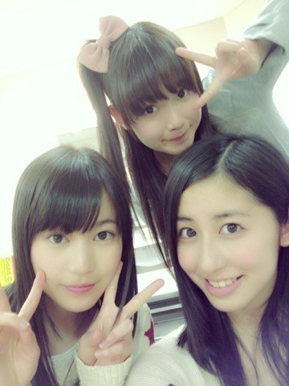

| 2013/05 07 Tue | もっと飛びたい(´> ∀<｀)ゝ |
ちはるーむへようこそヽ(・∀・)ノ
あたしと、あたし。笑
北川社長がわざわざ撮ってくれました\( ˆoˆ )/笑
社長、さりげなくブレてますよ。笑
前回のブログはたくさんの祝福をありがとう！！(o>ω<o)
嬉しかったです

だからコメントは全部結果発表の直前に見て
気持ちを上げてたっ(o^^o)笑
心の支え\( ˆoˆ )/！
これからも期待に応えられるように
がんばるっ！！！！

 昨日は昼も夜も栄さんに立候補。
昨日は昼も夜も栄さんに立候補。
そして昼には女中6になりました！
栄には、誠一とは違う役も演じたくて立候補したんですけど、
残念ながら役にはなれなくて(´._.`)
悔しかったけどななみんには納得！
そして感心！
頭がいいから切り返しが早くて上手いから
学ぶところがいっぱいです\( ˆoˆ )/
昼には女中に初めてなることができてっ！！
嬉しかったし、楽しかったし、衣装も可愛いし、
この物語をゆるがす女中は楽しんでできました\( ˆoˆ )/
今日は昼も夜も誠一さんに立候補。
そして夜には女中3になりました！
昼は一幕で悔いなく演じられたから
二幕出れなくてもやり切った！！って思ってたんだけど、
やっぱり悔しかったな。うん。
ちっくしょー
だからライブのときに愛未と鬱憤を晴らすように
もう全力で、ただひたすら全力で
シャキイズムを踊りましたよ。笑ヽ(・∀・)ノ
だから、もう一回リベンジだ！って思って
夜も誠一立候補したけど
まさかのまさかのまさかすぎる飛鳥に誠一をやられてしまって！
驚いた！細かった！サイズ感！笑
女中3を頑張りました♡！！
3は特に目立つところが多くて楽しいんだよ～\( ˆoˆ )/
でもやっぱり夜も悔しかったけど、
やっぱりどこかやりきれてないところがあって。
だからもっとこうしたら良かったなーとか後悔がうまれちゃって。
もやもやしました。
だから明日の一幕からは
絶対後悔だけはしないように
全力でやり抜きます！！
頑張る！！
明日の役。
毎回すごく悩むんだけどねー
明日からはまた、新しい、挑戦をしようかと、考えてます。
その有志だけでも見ててくれたら嬉しい！！

がんばるぞ！おー！

めーちゃんいくちゃんちーちゃん
めーちゃん故にひめーちゃん故にめーちゃん
そしてそしてっ今日の夜は、
さいとうさんたち、ちーむN、中3組、
みんなで二幕にでることができたっ♡！
すごくいい思い出になったよ\( ˆoˆ )/
明日からも、また一緒に出られたら嬉しいね
ばいるんっ
るんるんっ
ちはるんっ
(´>∀<｀)ゝ
コメント(147)
2013/05/07 00:00